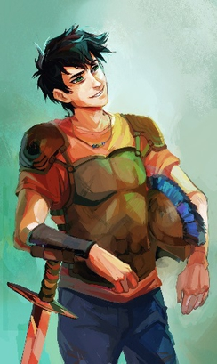

I started reading Percy Jackson as a 4th grader, and I can say that is altered my brain chemistry. I found it super cool. Percy meeting new friends, going on missions, saving the world... It was really special. In this website, I will talk about Percy Jackson, and try to indroduce you to the books.
Click on the picture above ↑
The Percy Jackson and the Olympians series are consisting of 5 books. The author of the series is Rick Riordan. He released the first book in 2005. It was a great success, and it all started as a bed time story. After Rick saw that the book is liked among the people, he decided to continue writing the series. Now he has written over 50 books, and sold over 180 million samples.
Percy Jackson and the Olympians series
| 1. | 2. | 3. | 4. | 5. |
|---|---|---|---|---|
| The Lightning Thief | Sea of Monsters | The Titan's Curse | Battle of the Labyrinth | The Last Olympian |
After Rick Riordan saw what his books achieved, he decided to write more. The Percy Jackson and the Olympians series followed Greek mythology. He later got an idea to write about other mythologies too. After the Percy Jackson and the Olympians, he released the new series, following Roman mythology - The Heroes of Olympus. In my opinion, these books were the absolute best. They introduced more heroes and more adventures. It was interwoving the Greek and Roman mythologies, which lead to a great success.
These are the main heroes in the "Heroes of Olympus"
These 2 series were maybe Rick's most popular ones, but he's written a lot more books. I will list some here:
After the books were so successful, the movies came out.
They weren't really accurate, so Rick announced the TV show.
They started filming in 2022, and released the first episode in December 2023.
The main actors were:
The show achieved great success, and they announced season 2!
Credits to Petra for letting me use her great animations!
I am also very grateful for all the support given from my friends while making this website!
Made by Rasťo, Feb. 17th 2024
